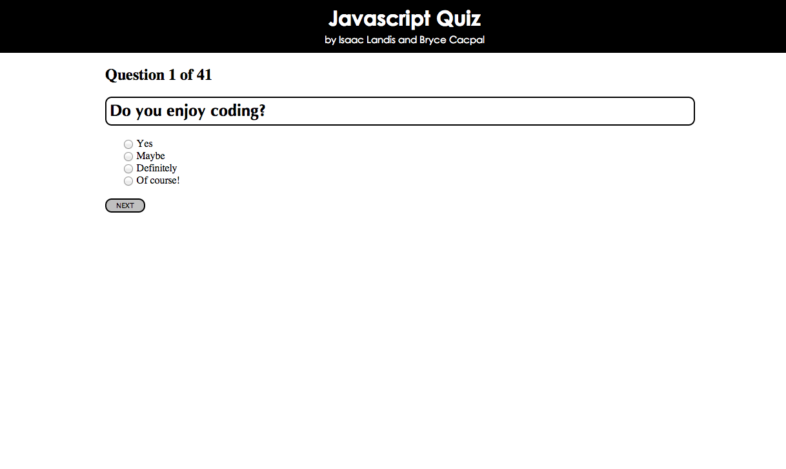
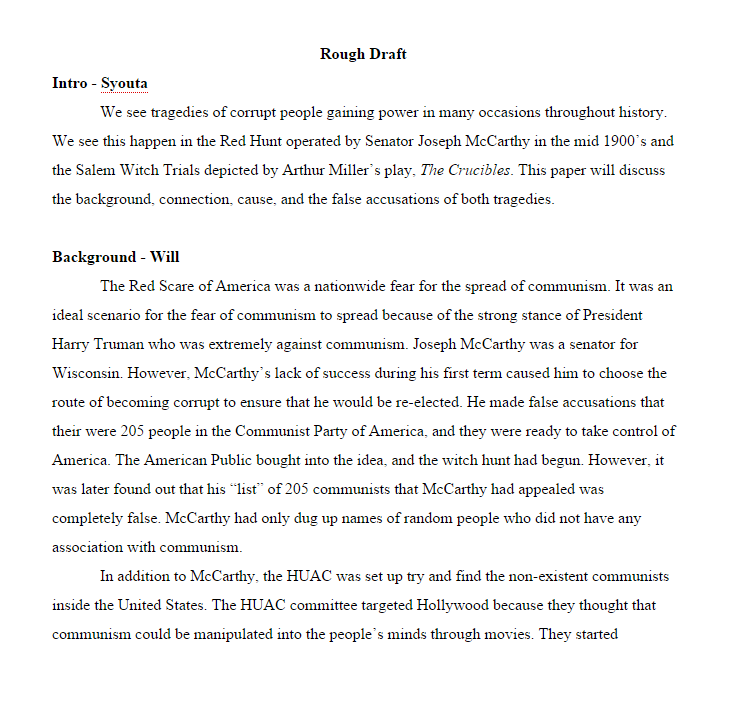
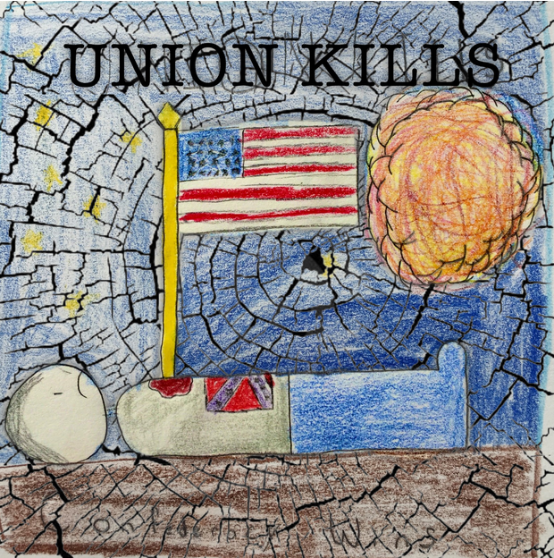
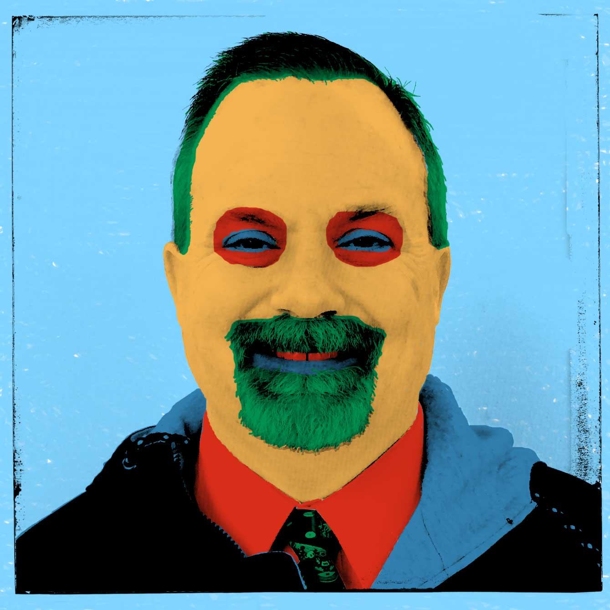
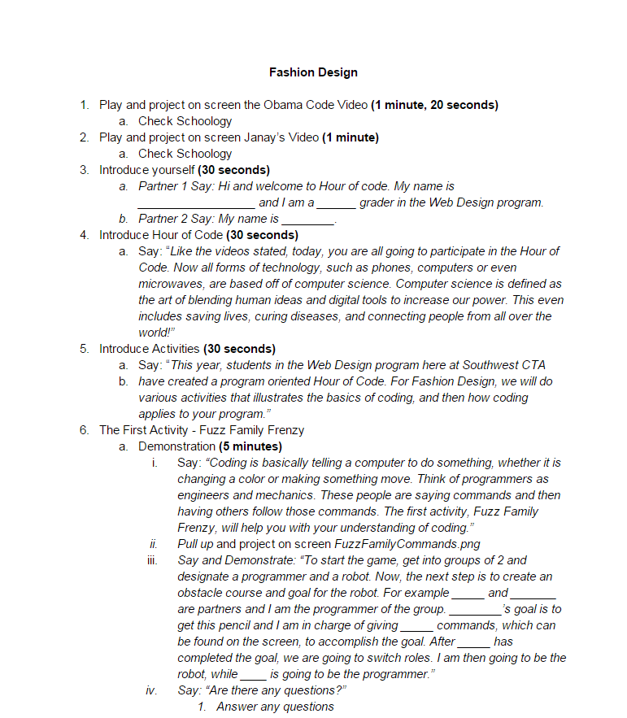
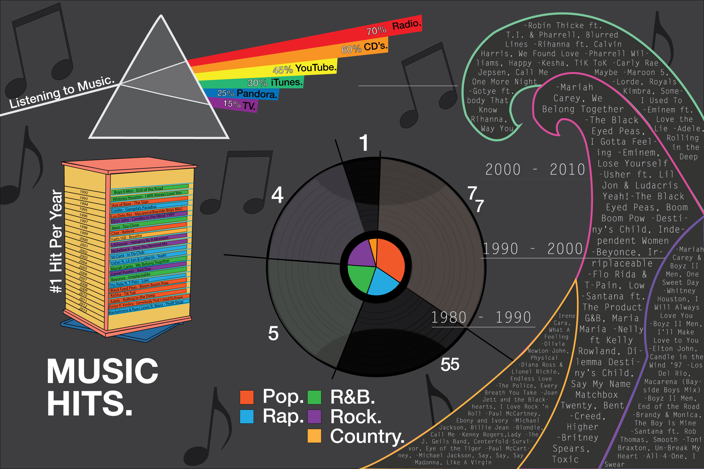

ISAAC LANDIS
11TH GRADE
Content Knowledge
Javascript Quiz
Project Date: October 2014
Class Name: Web Design
About:
For this project, the class was split into groups of two. Each group had to code a Javascript quiz that had randomized questions and randomized answers. The quiz required to have forty questions with four answer choices available for each question. The questions were split up with ten being on HTML5, ten on CSS, ten on Javascript, and ten on the history of the internet. After coding the quiz, we had to put it onto a website and style it. Once all this was done, we would present the quiz in front of the class to prove that it worked. While presenting and testing the quiz out, we had to explain what we did and cover the code.
Reflection:
This project was a disaster at first for me. Me and my partner decided to split this up by having one person do the HTML, CSS and create the questions, while the other person did all of the Javascript coding. I chose to do the Javascript coding because I had a better understanding of it than my partner did, and it went downhill from there. I used what I learned and did a lot of searching around to learn how to randomize questions and answers and display which were right and wrong. I ended up having over 900 lines of code that still didn’t completely work before I decided the night before to completely start over. After starting over and stressing throughout the night, I managed to get the code to work, and it was an amazing feeling to know this. The presentation went very good as well. This assignment taught me a lot about Javascript, but mostly taught me that it’s okay to start over and not be afraid to take that risk.
Writing Skills
Synthesis Essay
Project Date: October 2014
Class Name: English 11 Honors
About:
The synthesis essay was a group essay given to each group in class. The groups composed of four people in each group. This was a group essay of at least four pages where the groups had to study on the Salem Witch Trials and the HUAC Committee. Afterwards, the groups would have to point out the similarities and differences between the two and compare the two subjects in the essay. A background to both were also needed, and then the reasoning and evidence behind both events happening. A common theme was then pointed out, and a way to prevent an event like this from happening once more had to be included.
Reflection:
This project was new and foreign ground for me. I had vague knowledge on the Salem Witch Trials and HUAC Committee from what my teacher had told us, and from the Crucible. This vague knowledge lead to a lot of research to learn about the subject. This was also my first ever group essay, so splitting up the sections for each person was also a difficult task to decide, but we overcame this obstacle. This was probably the most writing I had done for an essay and the most informative essay I have done. It was very stressful and not very enjoyable, but the outcome was worth it. I learned how to create a group essay, and hope to become better at such.
Work Ethic
Popagraph
Project Date: October 2014
Class Name: US History Honors
About:
This assignment was actually part of a larger assignment that we composed into one later on in the year. We split the class into groups of around 2-3 people in each group. After all the groups were made, we needed to create a poster for the Union or Confederacy as a sort of propaganda poster for whichever side we chose. After creating the poster, we had to use an app called popagraph to enhance our poster. My group decided to choose the Confederacy and create our propaganda poster from that.
Reflection:
This project was a lot of fun for me and my group members. It gave us the opportunity to showcase our creative skills while at the same time persuade a certain audience to believing a certain opinion. My group first drew out the poster and colored it all on just paper as a sort of basis for the poster. After we had done this, we went along with using the popagraph app and I feel the result was very nice. The popagraph app at first was quite confusing to use, and we had some trouble because we had a few class periods to work on this, but we couldn’t work on it the first period we had. We couldn’t work because of the school Wi-Fi being a bit inconsistent and the app wouldn’t download. We eventually overcame this and managed to finish it. It taught me how to be versatile in a variety of different apps and how you need backup plans.
Use of Resources
Andy Warhol Inspired Images
Project Date: November 2014
Class Name: Graphics Design 3
About:
This project involved creating Andy Warhol inspired images using teachers from our school. We would split up into groups of six, and each person would get a teacher. No teachers could be used twice, so it was on a first come first serve basis. Each student would then be responsible for capturing an image of their teacher, and transforming them into an Andy Warhol type picture. The pictures would then all be compiled with all six teachers in each group being put onto one document.
Reflection:
I really enjoyed doing this project because of how fun it was. We got to learn about Andy Warhol who is an artist I am a fan of and got to recreate some of his most famous works. The process of choosing a teacher was a bit hard because we were a bit late when it came to deciding our teachers, but we got past that. The hard part was getting the tones on the face to actually seem Warhol-esque, and took me some time. Once my group posted our group picture, I was very proud of the outcome of mine, and my groups. Comparing to other groups, I felt as ours was very well done. My picture even got printed out and put on display in the hallway of one of our buildings, which was a great plus. I learned how to use Photoshop a lot better than I knew before, and improved on my previous skills.
Presentation Skills
Hour of Code
Project Date: December 2014
Class Name: Web Design
About:
The Hour of Code was an assignment where we had to participate in the Hour of Code at school. Being as we are web design students, we were required to teach this to the other program areas throughout the school. Each person was randomly assigned a partner and program area to teach. A script was given to each person, with slight modifications depending on the program area. Each pair would then have to follow the script and teach the students about coding and how it relates to their program area, while answering any questions the students may have along the way.
Reflection:
This presentation for this project didn’t end up as well as it could have, but it was still interesting and different. This was the first time where we had to teach students who weren’t in the same program area as us about our program area. We had the knowledge and a script to follow so it wasn’t very hard. The only problem would be the students. My partner and I were assigned students in the Fashion Design program area, and were required to teach them. We did well at first, but as it went on, the students started to not listen to us because we were just students, and didn’t have the same authority that teachers have. The project also had some parts in the script that could have been improved, but overall the project was good, and ended up as a success. I learned that sometimes people may not listen, and I need to just continue.
Teamwork/Collaboration
Infographic Project
Project Date: September 2014
Class Name: Graphics Design 3
About:
The classroom was split into groups of two, with each group being required to create an infographic. The infographic had to be designed in Adobe Illustrator so a large amount of vectors was in use. Each group was assigned their own topic that they got to pick, and no two groups were allowed to have the same topic. There needed to be a clear theme and color scheme in the infographic, with accurate data being used. There also needed to be four criteria in the image that was being used. After the infographics were created, each group would present their infographic to the class and explain what each segment was and what the topic was.
Reflection:
This was one of my favorite projects to be assigned. I love infographics, so learning how to create one was something I’ve always wanted to do. The freedom we were given was also a huge upside, so my partner and I settled on the topic of music because it was something that interested the both of us. We drafted out our ideas, and eventually put it into the infographic. The boring and most challenging part was the research for the information and data. Once we had the data, we just had to display it through images, which we did utilizing things that represent the topic. We used a vinyl record, a CD cabinet, a wave, and a triangular prism paying homage to Pink Floyd’s “Dark Side of the Moon” album art. The design aspect went very well, with me and my partner splitting it up evenly. The presentation went well and we received positive feedback. This project overall taught me how to display information through images, and effectively design with a partner.